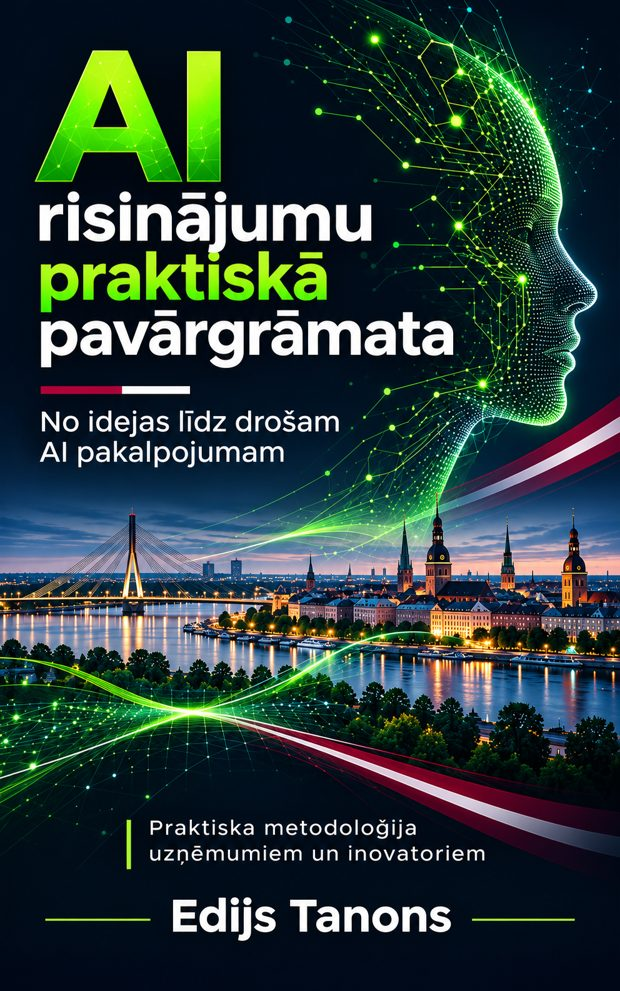

Uzņēmuma dokumentu AI asistents
Atbild uz darbinieku jautājumiem no organizācijas dokumentiem un parāda avotu (RAG).
DOCUMENTS→CHUNKING→EMBEDDINGS→RETRIEVAL→LLM→ANSWER + SOURCES
No idejas un datiem līdz drošam, pārbaudītam AI risinājumam. Praktiska rokasgrāmata uzņēmumiem, publiskajam sektoram un AI projektu komandām: kā izvēlēties pieeju, sagatavot datus, novērtēt kvalitāti, ievērot AI Act un GDPR un nonākt līdz reālai ekspluatācijai.

Vispirms izvēlies vienkāršāko tehnoloģiju, kas spēj uzticami atrisināt konkrēto problēmu. GRĀMATAS PAMATPRINCIPS · PRIEKŠVĀRDS
Saruna par AI pārāk bieži sākas ar jautājumu “Kādu modeli izvēlēties?”. Grāmata sāk ar biznesa problēmu, datiem un to, kā objektīvi izmērīt, vai risinājums strādā.
Neatkarīgi no tā, vai būvējat dokumentu asistentu, video analītiku vai AI aģentu. Grāmata katru posmu apskata atsevišķi.
Grāmata veidota kā pavārgrāmata. Ja ideja jau ir, var sākt uzreiz ar atbilstošo recepti.
Atbild uz darbinieku jautājumiem no organizācijas dokumentiem un parāda avotu (RAG).
Kameru un attēlu analīze: defekti, drošības ekipējums, objektu skaitīšana, numura zīmes.
Klientu apkalpošana, rezervācijas un helpdesk pa tālruni, kur aizture ir kritiska.
Rēķini, līgumi un veidlapas pārvērsti strukturētos datos un nodoti ERP sistēmai.
Klientu aizplūšana, iekārtu bojājumi, pārdošanas apjomi. Bieži bez LLM.
AI, kas ne tikai atbild, bet dara: CRM, līgumi, piedāvājumi ar kontrolētām tiesībām.
Kad fine-tuning ir jēgpilns, kad labāk izvēlēties RAG un kā pielāgot pamatmodeli.
Datu gatavības pārbaudes lapa, lietojuma gadījuma kanva, datu kopas un modeļa pase, risku matrica, AI terminu vārdnīca.
Grāmata tiek gatavota izdošanai un drīzumā būs nopērkama Jāņa Rozes grāmatnīcās visā Latvijā. Uzrakstiet autoram, ja vēlaties saņemt ziņu, kad tā būs pieejama, vai iegādāties vairākus eksemplārus komandai vai pasākumam.
Regulējuma informācija (AI Act, GDPR, MIC speciālā regulatīvā vide) atbilst stāvoklim 2026. gada oktobrī.
Uzrakstiet pāris teikumus par savu ideju vai vajadzību, un vienosimies par laiku tikšanās reizei.